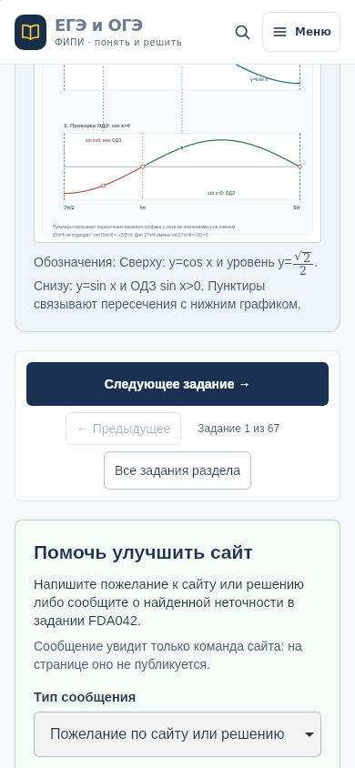
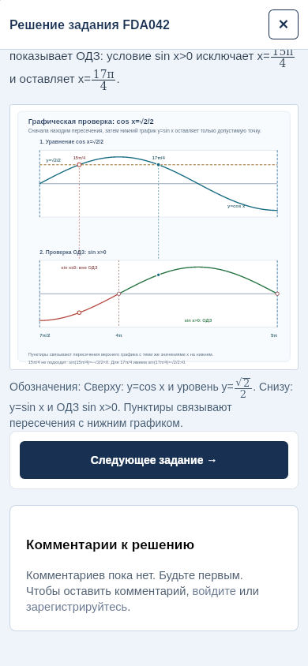

Опубликовано 13 ноября в 01:41 МСК. Кнопка после готового решения и в окне решения стала контрастной, высотой не менее 48 px, на телефоне занимает всю ширину. Под встроенным решением она стоит первой в блоке навигации. Верхняя навигация сохраняет компактный вид.
В обновлённом срезе за 8–12 ноября на iPhone было 84 визита с входом на отдельные задания; next_task зарегистрирован в одном визите. Это основание проверить заметность продолжения занятий, а не доказательство ошибки кнопки. Ссылки и порядок заданий сохранены. Улучшение конверсии пока не установлено.
Сохранены цель next_task (663176354), прежние значения placement и правило «одно действие — одно событие». Добавлен параметр navigation_area:
| Значение | Место |
|---|---|
| top | Верхняя навигация страницы задания |
| after_solution | Кнопка под встроенным решением |
| dialog | Кнопка в окне решения на странице или в каталоге |
Раньше параметра не было; он также может отсутствовать в давно открытых вкладках. Пустая группа не означает нулевые переходы. Первое полное московское окно новых данных — 14 ноября. Эффект оценивать после накопления 7–14 полных дней на сопоставимых устройствах, источниках и страницах входа. Новые цели и автоматические расписания не создавались.
WebKit запускался в Linux с профилем iPhone, это не настоящий iPhone и не нативный «Яндекс Старт». Реклама в WebKit заменялась управляемым блоком 600 px, в Chrome блокировалась; реальных рекламных показов и целей от тестов нет. Публичные сценарии не создавали аккаунты или заявки, записи запрещены перехватчиком WebKit. Предпросмотр использовал отдельную копию SQLite и пустую базу заявок с отключённой отправкой уведомлений. Содержимое заданий и решений, рабочие базы, настройки счётчика и реклама в рамках изменения не редактировались.


| Ширина | Сценарий | placement | navigation_area | Результат |
|---|---|---|---|---|
| 120.25 | top | task_page | top | Пройдено |
| 317 | after_solution | task_page | after_solution | Пройдено |
| 325 | dialog | task_page | dialog | Пройдено |
| 120.25 | top | task_page | top | Пройдено |
| 332 | after_solution | task_page | after_solution | Пройдено |
| 340 | dialog | task_page | dialog | Пройдено |
| 120.25 | top | task_page | top | Пройдено |
| 372 | after_solution | task_page | after_solution | Пройдено |
| 380 | dialog | task_page | dialog | Пройдено |
| 390 | /?topic=1.2#tasks | catalogue_dialog | dialog | Пройдено |
| 390 | /oge?topic=all | oge_catalogue_dialog | dialog | Пройдено |
| 390 | /oge-physics?topic=all | oge_catalogue_dialog | dialog | Пройдено |
| 375 | Без JavaScript | — | — | Пройдено |
Итог проверок · Публикация · Срез до изменения · Chrome · WebKit